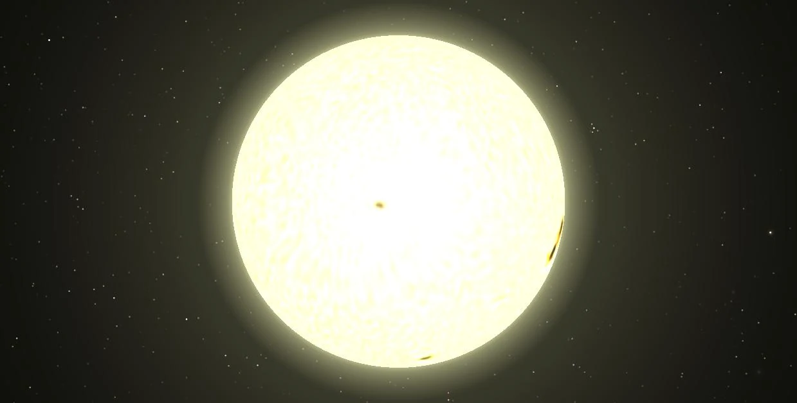

Звезда немного уступает Солнцу по размерам: её масса и радиус составляют 0,783 и 0,79 солнечных соответственно. Спектр Тау Кита показывает её низкую металличность и, следовательно, в гипотетической планетной системе этой звезды маловероятно наличие планет-гигантов. Но низкая металличность звезды не снижает вероятности существования планет меньших размеров, в том числе и земного типа. Наблюдения выявили наличие пыли в системе Тау Кита в количествах, десятикратно превышающих количество пыли в Солнечной системе. Звезда относительно стабильна, с незначительными колебаниями блеска. Благодаря своей стабильности и похожести на Солнце Тау Кита была избрана объектом для поиска инопланетного разума методом прослушивания в радиодиапазоне (проект SETI). По этой же причине она часто упоминается в научно-фантастической литературе и массовой культуре. У Тау Кита нет исторического имени. Тау Кита можно найти на небе невооружённым глазом как слабую звезду третьей звёздной величины. Если наблюдать Солнце из системы Тау Кита, то оно будет видно как слабая звезда со звёздной величиной 2,6m в созвездии Волопаса.
Благодаря значительной яркости и чрезвычайно низкой хромосферной активности Тау Кита стала заманчивой целью для программ поиска внесолнечных планет начиная с 1990-х годов. Плотные ряды доплеровских измерений колебаний лучевой скорости звезды на 2012 год исключили наличие вокруг неё спутников с массами, превышающими массу Юпитера до десятков а.е. и с массами превышающими массу Нептуна до 3—4 а.е. В декабре 2012 года группа астрономов из Британии, Чили, США и Австралии объявила об обнаружении 5 экзопланет у Тау Кита. Периодические колебания лучевой скорости звезды свидетельствовали о присутствии пяти планет b, c, d, e, f на стабильных орбитах, близких к круговым, с периодами обращения в 13,9, 35,4, 94, 168 и 640 дней и минимальными массами в 2, 3,1, 3,6, 4,3 и 6,6 масс Земли соответственно. Планета Тау Кита e с минимальной массой 4,3 массы Земли попала на внутренний край зоны обитаемости — на её поверхности вода теоретически может находиться в жидком состоянии, а значит, есть условия для существования живых организмов[5]. Чуть позже было высказано предположение, что и самая внешняя планета Тау Кита f также может оказаться жизнепригодной[6], несмотря на низкую инсоляцию (около четверти земной). В августе 2017 года группа астрономов из Великобритании и США во главе с Фабио Фенгом из университета Хартфордшира обнародовала[7] свой результат анализа данных по системе Тау Кита, полученных на спектрографе HARPS, принадлежащего Европейской южной обсерватории, и обсерватории Кека. В новых измерениях видны признаки существования четырех планет. Две из них, Тау Кита e и Тау Кита f уже были обнаружены и описаны ранее, но их минимальную массу снизили до 3,9 земных. При этом, были обнаружены две новые планеты, Тау Кита g и Тау Кита h, а существование b, c и d было поставлено под сомнение (сигнал от первой оказался слишком слаб, от второй - близок к периоду вращения звезды, от третьей - не присутствует во всех наборах данных). Новые планеты обнаружились путём усовершенствования методов удаления шумов из полученных данных, что в итоге позволило обнаруживать минимальные отклонения звезды от невозмущённой орбиты[8][9]. Для подтверждения существования этих планет необходимы независимые наблюдения другими астрономами[10]. Кандидаты в экзопланеты:
| Название планеты | Минимальная масса (M⊕) |
Период обращения (дней) |
Большая полуось орбиты (а. е.) |
Эксцентриситет орбиты |
|---|---|---|---|---|
| < 2,0 | 13,965 | 0,105 | <0,16 | |
| Тау Кита g (HD 10700 g)[8]:20 | 1,75 | 20,022 | 0,133 | 0,06 |
| < 3,1 | 35,361 | 0,195 | 0,03 | |
| Тау Кита h (HD 10700 h)[8]:20 | 1,83 | 49,41 | 0,243 | < 0,23 |
| около 1,42 | 94,589 | 0,374 | 0,08 | |
| Тау Кита e (HD 10700 e)[8]:20 | 3,93 | 162,87 | 0,538 | 0,18 |
| Тау Кита f (HD 10700 f)[8]:20 | 3,93 | 636,13 | 1,334 | 0,16 |
Если планетная система Тау Кита соответствует тому же распределению периодов и масс планет, что и системы обнаруженные телескопом «Кеплер» (что чрезвычайно вероятно), то все 7 кандидатов могут оказаться реальными планетами (учитывая наводимую амплитуду и предполагаемое наклонение близкое к наклонению местного пояса Койпера — 35 градусов, их массы попадут в диапазон 1,2—8 земных), а в обитаемой зоне должно быть место для восьмой — несколько более тяжёлого аналога Земли.[11] Ещё несколько планет могут оказаться в широком промежутке между орбитой планеты f и внутренней кромкой пылевого диска.
